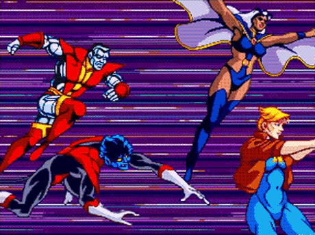
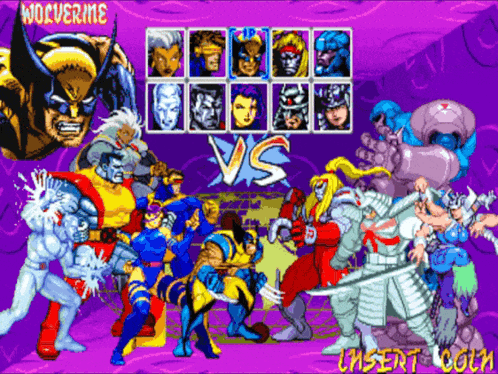
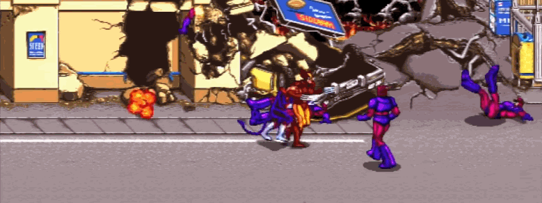
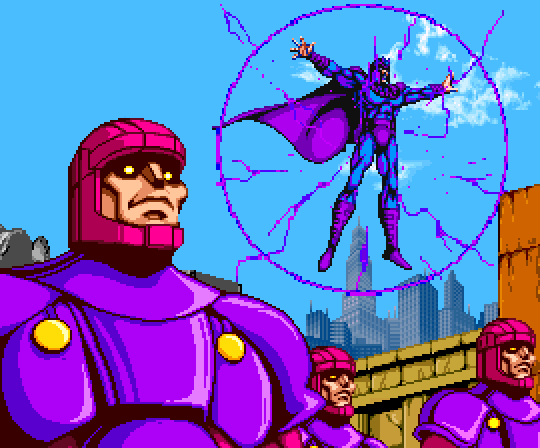
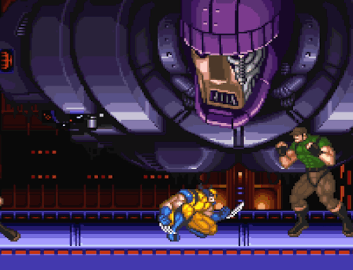
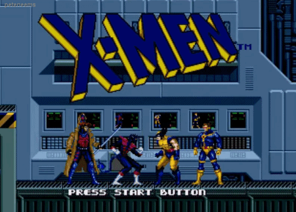
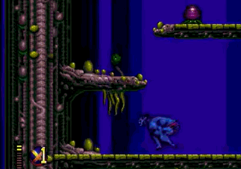

ARCADE FEVER
Side-Scrolling Beat-em-Up action was popular during the release of Konami's classic X-Men Arcade Game in the 1992.

Children of the Atom for the Capcom CPS-2 arcade system allowed the artists to recreate vibrant versions of the 90s era X-Men heroes and villains ready for battle.
Capcom Developed this arcade system to be versatile and inexpensive for Arcade Operators in the face of more powerful 3D hardware. 3D Graphics of the time would not have been able to compete with the detail and animation seen in Children of the Atom.
Other Capcom games followed the same design philosophy but expanded to the larger Marvel Universe.

Side-Scrolling Beat-em-Up action was popular during the release of Konami's classic X-Men Arcade Game in the 1992.

The Konami Produced X-Men Arcade game allowed up to 6 players to engage in simultaneous action, providing an intense and chaotic cooperative experience.

Konami perfectly captured the look of the 1990s X-Men Saturday morning cartoon series in the game's attract screens.

The SNES also got a taste of multi-X-Men action in a campaign against Apocalypse.

The Sega version of X-Men allowed players to choose between Gambit, Nightcrawler, Wolverine and Cyclops. Travelling through dangerous holographic locations through portals in the "Danger Room"

The Sega version of X-Men 2 continued the action-packed gameplay, allowing players to recruit villians like Magneto and experience the classic X-Men adventures in the Savage Land and against Apocalypse.
Once the success in the arcades started waning, developers began to recognize the need to develop large scale interactive 3D experiences to captivate audiences and maintain the franchise's popularity.
This Xmen game was especially fun for gamers who wanted to play multiplayer in the home.
Once the success in the arcades started waning, developers began to recognize the need to develop large scale interactive 3D experiences to captivate audiences and maintain the franchise's popularity.
This Xmen game was especially fun for gamers who wanted to play multiplayer in the home.
X-Men on Sega Genesis is brutally hard, try this code to see the whole game!
X-Men on Sega Genesis is brutally hard, try this code to see the whole game!